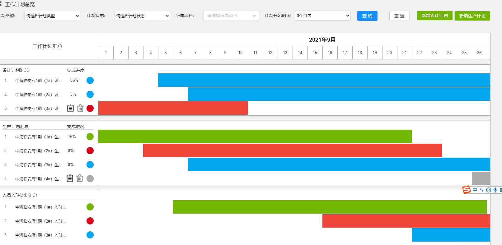
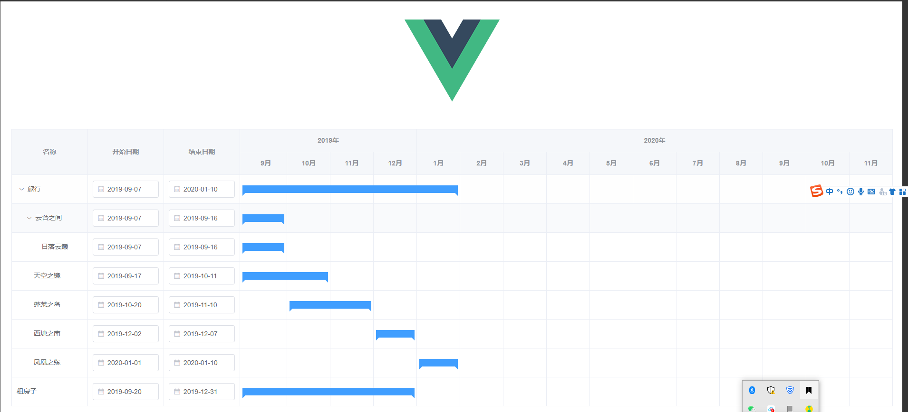
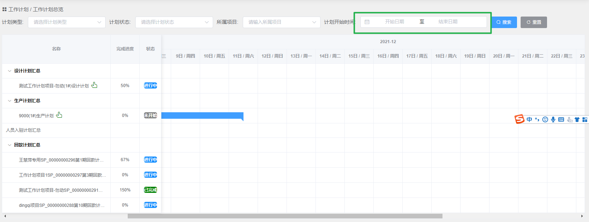
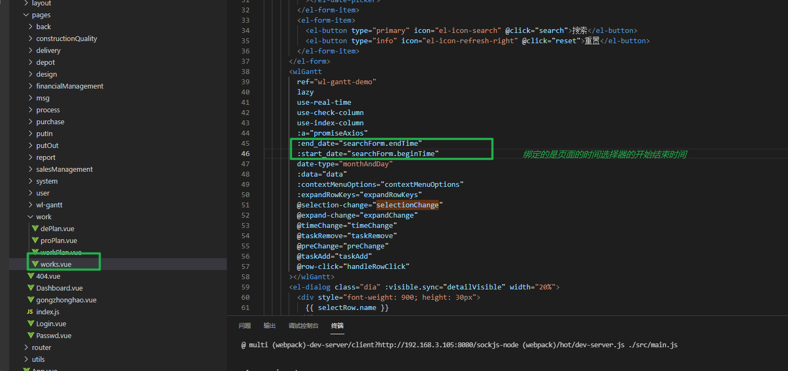
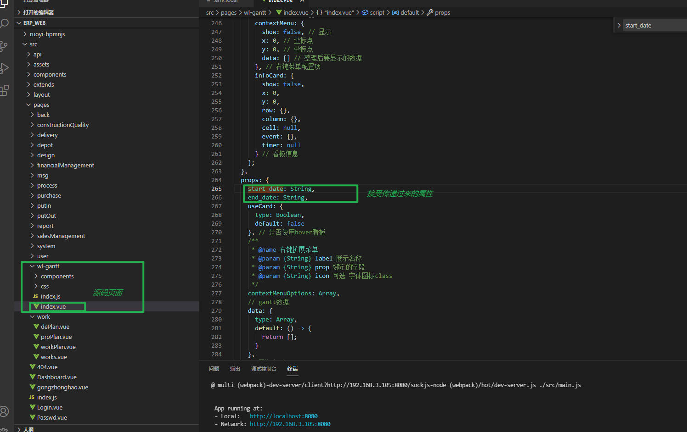
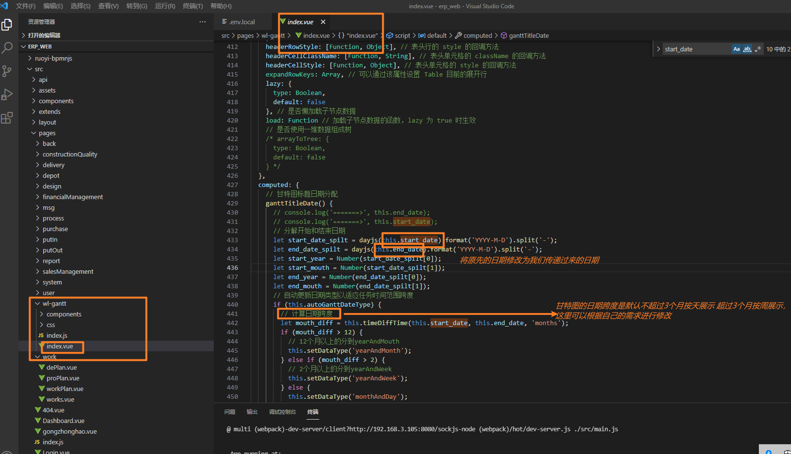
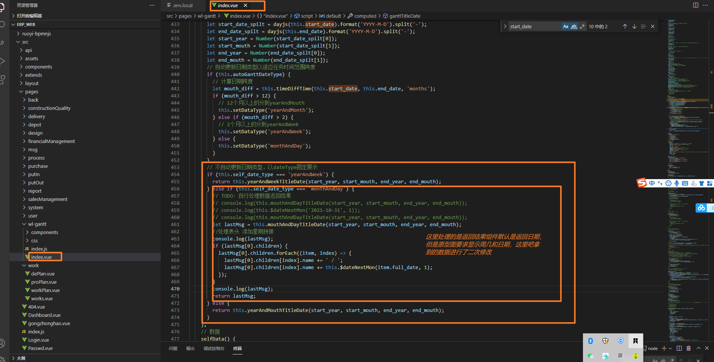
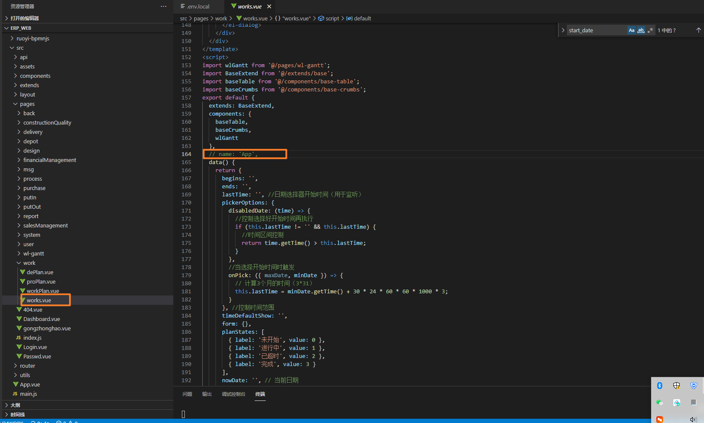

甘特图
最近需要开发一个新需求，看到原型图以后，要是开发完这个需求，我就自封高级前端工程师😏

然后开始在百度疯狂扒拉甘特图的插件，刚开始用的是dhtmlxGantt这个插件 ，在写到一半的时候发现并不能满足原型图需求（原型图的头部时间需要选择时间段，但是这个插件默认显示一个月，没有找到改变头部时间的方法）就换了 **wl-gantt**这个插件，可以去git看源码以及文档说明。
这是wl-gantt的示例图：

与原型还是有一些差距的，下面是根据原型图需求进行的修改
1.
原型图需求是默认显示当前月日期，并且支持时间选择器进行搜索，最大三个月，这就需要我们去改wl-gantt源码




2.关于wl-gantt使用过程中遇到的坑：
当写完整个页面时发现没有问题，但是当你打开f12看network时就会发现问题来了，页面刚刷新的时候，network没有执行任何函数，也就是说created函数没有执行，这带来了很大的麻烦，因为初始化的时候要执行很多操作，所以就把初始化的操作用watch监听和actived函数结合来使用，虽然效果可以实现，但是代码很冗余。
后来一直在扒拉源码发现了问题所在

就是这一句代码！
以上是关于甘特图需求遇到的问题，如果有不对的地方欢迎指正，过程中有不清楚的问题欢迎随时评论😇